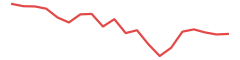
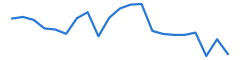

日本 銘柄別ヒートマップ(直近1日)

⚠ Fear & Greed指数が極度の恐怖(Extreme Fear)に達しています
現在値: 17.42 (基準: 20 / 2026-11-24時点)
# 本日の市場分析コメント（2026年11月25日） ## 日経平均株価 本日の日経平均は**57,068円**で引け、前日（58,644円）から約1,576円の大幅下落となりました。11月20日に一時56,436円まで下げた後、23〜24日にかけて58,644円まで戻していましたが、本日再び売りが優勢となり、戻り売りに押される展開です。10月末に64,000円台の高値を付けて以降、約11%下落しており、調整局面が続いています。 ## ドル円 ドル円は**159円33銭**と、円安・ドル高基調が継続しています。11月中旬以降159円台で高止まりしており、本日も前日比で円安方向。通常であれば円安は輸出関連株の追い風となりますが、現状では株価の下支えにつながっておらず、リスク回避の動きが優勢となっている様子がうかがえます。 ## 日経平均VI 直近（11月24日）の日経平均VIは**31.51**で、警戒ライン（50）を大きく下回っています。株価が急落している割にはボラティリティの急上昇は見られず、パニック的な売りというよりは、じわじわとした調整の様相です。 ## ⚠️ Fear & Greed指数 ― 極度の恐怖 注目すべきは**Fear & Greed指数**です。11月23日に**14.88**、本日24日に**17.42**と、いずれも警戒ライン（20以下）を下回り、**「極度の恐怖（Extreme Fear）」水準**に達しています。11月19日以降、15〜18台での推移が続いており、投資家心理が著しく委縮している状況が明確に示されています。 ## 総括 株価の下落に対し、VIは比較的落ち着いている一方で、Fear & Greed指数が極度の恐怖圏にある点が特徴的です。円安が株価を支えきれていないことも含め、市場心理が慎重に傾いていることが読み取れます。極度の恐怖水準は逆張りの目安とされることもありますが、相場の底入れを断定できる局面ではなく、今後の指標推移やセンチメントの変化を慎重に見極めたいところです。 ※本コメントは客観的な市場観察であり、投資判断を推奨するものではありません。
株価が-2σ(統計上95.4%の範囲の外)まで到達。売られすぎの限界点に近く、反発の可能性が高まっている水準。
2つの高値が近い水準(3,449.0/3,502.0)で、ネックライン(3,224.0)を下抜け。下降トレンドへの転換。
2026-11-20に材料なき前日比-5.4%の急落。そこから反発しつつあり、逆張りの買い場となる可能性(ニュースの有無は要確認)。
25日移動平均線から-6.7%乖離した後、反発の陽線。「適正価格」への回帰(引力)が期待される逆張りポイント。
株価が-2σ(統計上95.4%の範囲の外)まで到達。売られすぎの限界点に近く、反発の可能性が高まっている水準。
RCI(9日)が-95.0%と-90%以下の売られすぎの極致。高確率でのリバウンドが期待される水準。
前日の実体の中に当日の小さな実体が収まる。勢いが内側にせき止められ、トレンド転換の予兆
2026-11-20に材料なき前日比-4.5%の急落。そこから反発しつつあり、逆張りの買い場となる可能性(ニュースの有無は要確認)。
2026-11-24に材料なき前日比-2.7%の急落。そこから反発しつつあり、逆張りの買い場となる可能性(ニュースの有無は要確認)。
始値と終値が拮抗し、相場の迷い・転換を示唆。
2つの高値が近い水準(3,245.0/3,292.0)で、ネックライン(3,008.0)を下抜け。下降トレンドへの転換。
2026-11-20に材料なき前日比-4.6%の急落。そこから反発しつつあり、逆張りの買い場となる可能性(ニュースの有無は要確認)。
株価が-2σ(統計上95.4%の範囲の外)まで到達。売られすぎの限界点に近く、反発の可能性が高まっている水準。
RCI(9日)が-93.3%と-90%以下の売られすぎの極致。高確率でのリバウンドが期待される水準。
2026-11-20に材料なき前日比-4.7%の急落。そこから反発しつつあり、逆張りの買い場となる可能性(ニュースの有無は要確認)。
2026-11-20に材料なき前日比-5.3%の急落。そこから反発しつつあり、逆張りの買い場となる可能性(ニュースの有無は要確認)。
RCI(9日)が-93.3%と-90%以下の売られすぎの極致。高確率でのリバウンドが期待される水準。
2026-11-20に材料なき前日比-5.5%の急落。そこから反発しつつあり、逆張りの買い場となる可能性(ニュースの有無は要確認)。
2026-11-20に材料なき前日比-5.1%の急落。そこから反発しつつあり、逆張りの買い場となる可能性(ニュースの有無は要確認)。
2つの高値が近い水準(5,039.0/5,100.0)で、ネックライン(4,620.0)を下抜け。下降トレンドへの転換。
2026-11-20に材料なき前日比-3.2%の急落。そこから反発しつつあり、逆張りの買い場となる可能性(ニュースの有無は要確認)。
25日移動平均線から-6.1%乖離した後、反発の陽線。「適正価格」への回帰(引力)が期待される逆張りポイント。
株価が-2σ(統計上95.4%の範囲の外)まで到達。売られすぎの限界点に近く、反発の可能性が高まっている水準。
RCI(9日)が-91.7%と-90%以下の売られすぎの極致。高確率でのリバウンドが期待される水準。
株価が-2σ(統計上95.4%の範囲の外)まで到達。売られすぎの限界点に近く、反発の可能性が高まっている水準。
RCI(9日)が-95.0%と-90%以下の売られすぎの極致。高確率でのリバウンドが期待される水準。
2026-11-20に材料なき前日比-3.0%の急落。そこから反発しつつあり、逆張りの買い場となる可能性(ニュースの有無は要確認)。
2つの底値が近い水準(1,809.0/1,837.5)で、ネックライン(1,868.5)を上抜け。上昇トレンドへの転換。
2つの底値が近い水準(4,643.0/4,782.0)で、ネックライン(4,879.0)を上抜け。上昇トレンドへの転換。
2つの底値が近い水準(569.8/566.0)で、ネックライン(597.4)を上抜け。上昇トレンドへの転換。
2026-11-20に材料なき前日比-3.1%の急落。そこから反発しつつあり、逆張りの買い場となる可能性(ニュースの有無は要確認)。
窓開けで孤立した後、逆方向へ窓を開けて急落。天井のサイン。
株価が-2σ(統計上95.4%の範囲の外)まで到達。売られすぎの限界点に近く、反発の可能性が高まっている水準。
2026-11-20に材料なき前日比-2.7%の急落。そこから反発しつつあり、逆張りの買い場となる可能性(ニュースの有無は要確認)。
窓開けで孤立した後、逆方向へ窓を開けて急落。天井のサイン。
株価が-2σ(統計上95.4%の範囲の外)まで到達。売られすぎの限界点に近く、反発の可能性が高まっている水準。
2つの底値が近い水準(339.2/331.6)で、ネックライン(348.6)を上抜け。上昇トレンドへの転換。
2つの高値が近い水準(542.4/554.7)で、ネックライン(506.1)を下抜け。下降トレンドへの転換。
2026-11-20に材料なき前日比-2.8%の急落。そこから反発しつつあり、逆張りの買い場となる可能性(ニュースの有無は要確認)。
2つの高値が近い水準(222.0/217.9)で、ネックライン(211.0)を下抜け。下降トレンドへの転換。
始値と終値が拮抗し、相場の迷い・転換を示唆。
2つの高値が近い水準(270.9/267.7)で、ネックライン(257.8)を下抜け。下降トレンドへの転換。
2026-11-20に材料なき前日比-4.1%の急落。そこから反発しつつあり、逆張りの買い場となる可能性(ニュースの有無は要確認)。
2026-11-20に材料なき前日比-2.7%の急落。そこから反発しつつあり、逆張りの買い場となる可能性(ニュースの有無は要確認)。
始値と終値が拮抗し、相場の迷い・転換を示唆。
2026-11-20に材料なき前日比-5.9%の急落。そこから反発しつつあり、逆張りの買い場となる可能性(ニュースの有無は要確認)。
25日移動平均線から-5.2%乖離した後、反発の陽線。「適正価格」への回帰(引力)が期待される逆張りポイント。
安値圏での十字線。下落の勢いが拮抗し、上昇相場への転換の可能性。
2つの高値が近い水準(364.4/354.0)で、ネックライン(333.4)を下抜け。下降トレンドへの転換。
始値と終値が拮抗し、相場の迷い・転換を示唆。
前日の実体の中に当日の小さな実体が収まる。勢いが内側にせき止められ、トレンド転換の予兆
2026-11-20に材料なき前日比-7.6%の急落。そこから反発しつつあり、逆張りの買い場となる可能性(ニュースの有無は要確認)。
2つの高値が近い水準(352.1/346.2)で、ネックライン(334.5)を下抜け。下降トレンドへの転換。
2026-11-20に材料なき前日比-3.0%の急落。そこから反発しつつあり、逆張りの買い場となる可能性(ニュースの有無は要確認)。
25日移動平均線から-5.3%乖離した後、反発の陽線。「適正価格」への回帰(引力)が期待される逆張りポイント。
株価が-2σ(統計上95.4%の範囲の外)まで到達。売られすぎの限界点に近く、反発の可能性が高まっている水準。
RCI(9日)が-91.7%と-90%以下の売られすぎの極致。高確率でのリバウンドが期待される水準。
2つの高値が近い水準(435.8/426.5)で、ネックライン(420.3)を下抜け。下降トレンドへの転換。
25日移動平均線から-7.1%乖離した後、反発の陽線。「適正価格」への回帰(引力)が期待される逆張りポイント。
RCI(9日)が-93.3%と-90%以下の売られすぎの極致。高確率でのリバウンドが期待される水準。
2つの高値が近い水準(409.4/412.0)で、ネックライン(394.1)を下抜け。下降トレンドへの転換。
25日移動平均線から-13.0%乖離した後、反発の陽線。「適正価格」への回帰(引力)が期待される逆張りポイント。
株価が-2σ(統計上95.4%の範囲の外)まで到達。売られすぎの限界点に近く、反発の可能性が高まっている水準。
2つの高値が近い水準(672.7/661.7)で、ネックライン(652.6)を下抜け。下降トレンドへの転換。
株価が-2σ(統計上95.4%の範囲の外)まで到達。売られすぎの限界点に近く、反発の可能性が高まっている水準。
2つの底値が近い水準(286.0/283.5)で、ネックライン(295.0)を上抜け。上昇トレンドへの転換。
窓開けで孤立した後、逆方向へ窓を開けて急落。天井のサイン。
RCI(9日)が-91.7%と-90%以下の売られすぎの極致。高確率でのリバウンドが期待される水準。
25日移動平均線から-11.6%乖離した後、反発の陽線。「適正価格」への回帰(引力)が期待される逆張りポイント。
前日の値動きを飲み込む強い陽線。強い上昇トレンドのサイン。
2つの高値が近い水準(51.6/51.0)で、ネックライン(49.4)を下抜け。下降トレンドへの転換。
2026-11-20に材料なき前日比-3.2%の急落。そこから反発しつつあり、逆張りの買い場となる可能性(ニュースの有無は要確認)。
株価が-2σ(統計上95.4%の範囲の外)まで到達。売られすぎの限界点に近く、反発の可能性が高まっている水準。
RCI(9日)が-91.7%と-90%以下の売られすぎの極致。高確率でのリバウンドが期待される水準。
2つの底値が近い水準(92.7/91.2)で、ネックライン(95.3)を上抜け。上昇トレンドへの転換。
株価が-2σ(統計上95.4%の範囲の外)まで到達。売られすぎの限界点に近く、反発の可能性が高まっている水準。
RCI(9日)が-93.3%と-90%以下の売られすぎの極致。高確率でのリバウンドが期待される水準。
前日の値動きを飲み込む強い陽線。強い上昇トレンドのサイン。
2つの高値が近い水準(66.4/64.5)で、ネックライン(63.3)を下抜け。下降トレンドへの転換。
2026-11-20に材料なき前日比-3.0%の急落。そこから反発しつつあり、逆張りの買い場となる可能性(ニュースの有無は要確認)。
25日移動平均線から-5.7%乖離した後、反発の陽線。「適正価格」への回帰(引力)が期待される逆張りポイント。
窓開けで孤立した後、逆方向へ窓を開けて急落。天井のサイン。
株価が-2σ(統計上95.4%の範囲の外)まで到達。売られすぎの限界点に近く、反発の可能性が高まっている水準。
窓開けで孤立した後、逆方向へ窓を開けて急落。天井のサイン。
25日移動平均線から-19.6%乖離した後、反発の陽線。「適正価格」への回帰(引力)が期待される逆張りポイント。
RCI(9日)が-91.7%と-90%以下の売られすぎの極致。高確率でのリバウンドが期待される水準。
25日移動平均線から-7.2%乖離した後、反発の陽線。「適正価格」への回帰(引力)が期待される逆張りポイント。
株価が-2σ(統計上95.4%の範囲の外)まで到達。売られすぎの限界点に近く、反発の可能性が高まっている水準。
25日移動平均線から-5.5%乖離した後、反発の陽線。「適正価格」への回帰(引力)が期待される逆張りポイント。
前日の実体の中に当日の小さな実体が収まる。勢いが内側にせき止められ、トレンド転換の予兆
2つの高値が近い水準(1,109.0/1,083.0)で、ネックライン(940.0)を下抜け。下降トレンドへの転換。
株価が-2σ(統計上95.4%の範囲の外)まで到達。売られすぎの限界点に近く、反発の可能性が高まっている水準。
RCI(9日)が-98.3%と-90%以下の売られすぎの極致。高確率でのリバウンドが期待される水準。
前日の実体の中に当日の小さな実体が収まる。勢いが内側にせき止められ、トレンド転換の予兆
2026-11-20に材料なき前日比-3.9%の急落。そこから反発しつつあり、逆張りの買い場となる可能性(ニュースの有無は要確認)。
2026-11-20に材料なき前日比-2.8%の急落。そこから反発しつつあり、逆張りの買い場となる可能性(ニュースの有無は要確認)。
安値圏での十字線。下落の勢いが拮抗し、上昇相場への転換の可能性。
RCI(9日)が-96.7%と-90%以下の売られすぎの極致。高確率でのリバウンドが期待される水準。
RCI(9日)が-96.7%と-90%以下の売られすぎの極致。高確率でのリバウンドが期待される水準。
RCI(9日)が-96.7%と-90%以下の売られすぎの極致。高確率でのリバウンドが期待される水準。
窓開けで孤立した後、逆方向へ窓を開けて急落。天井のサイン。
25日移動平均線から-11.8%乖離した後、反発の陽線。「適正価格」への回帰(引力)が期待される逆張りポイント。
RCI(9日)が-96.7%と-90%以下の売られすぎの極致。高確率でのリバウンドが期待される水準。
株価が-2σ(統計上95.4%の範囲の外)まで到達。売られすぎの限界点に近く、反発の可能性が高まっている水準。
株価が-2σ(統計上95.4%の範囲の外)まで到達。売られすぎの限界点に近く、反発の可能性が高まっている水準。
RCI(9日)が-98.3%と-90%以下の売られすぎの極致。高確率でのリバウンドが期待される水準。

| ルネサスエレクトロニクス |

|
2,354円 | -10.30% |
| キオクシアHD |

|
6,904円 | -14.07% |
| ローム |

|
2,606円 | -7.51% |
| 東京エレクトロン |

|
7,782円 | -13.01% |
| アドバンテスト |

|
23,840円 | -12.59% |
| SCREENホールディングス |

|
7,035円 | -7.53% |
| ファナック | 5,130円 | -4.00% | |
| 安川電機 |

|
3,224円 | -6.44% |
| キーエンス |
 |
14,580円 | -1.15% |
| ソフトバンクグループ |

|
2,722円 | -14.01% |
| NEC |

|
4,475円 | +3.16% |
| 富士通 |

|
3,391円 | +0.80% |
| NTT |

|
169円 | +1.62% |
| KDDI |

|
2,812円 | +1.24% |
| ソフトバンク |

|
239円 | +0.46% |
| 富士通 |
|
3,391円 | +0.80% |
| NEC |
|
4,475円 | +3.16% |
| NTT |
|
169円 | +1.62% |
| ACSL |

|
797円 | -7.54% |
| ヤマハ発動機 |

|
1,763円 | -0.62% |
| SUBARU |

|
2,751円 | +2.10% |
| 住友電気工業 |

|
1,235円 | -5.69% |
| 古河電気工業 |

|
1,568円 | -13.23% |
| フジクラ |

|
2,088円 | -13.63% |
| トヨタ自動車 |

|
3,421円 | +3.32% |
| パナソニックHD |

|
2,705円 | -8.20% |
| TDK |

|
2,142円 | -5.58% |
| 三菱重工業 |

|
2,634円 | -6.41% |
| IHI |
 |
2,192円 | -3.65% |
| 川崎重工業 |

|
1,484円 | -5.21% |
現在値: 57,068.46

現在値: 159.33

現在値: 31.51

現在値: 17.42

投稿がありません。